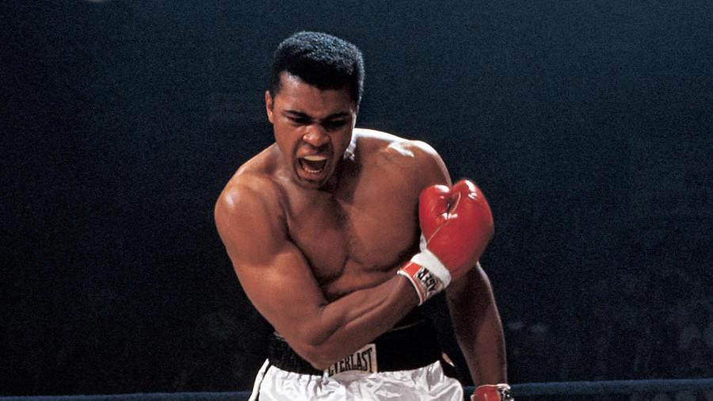
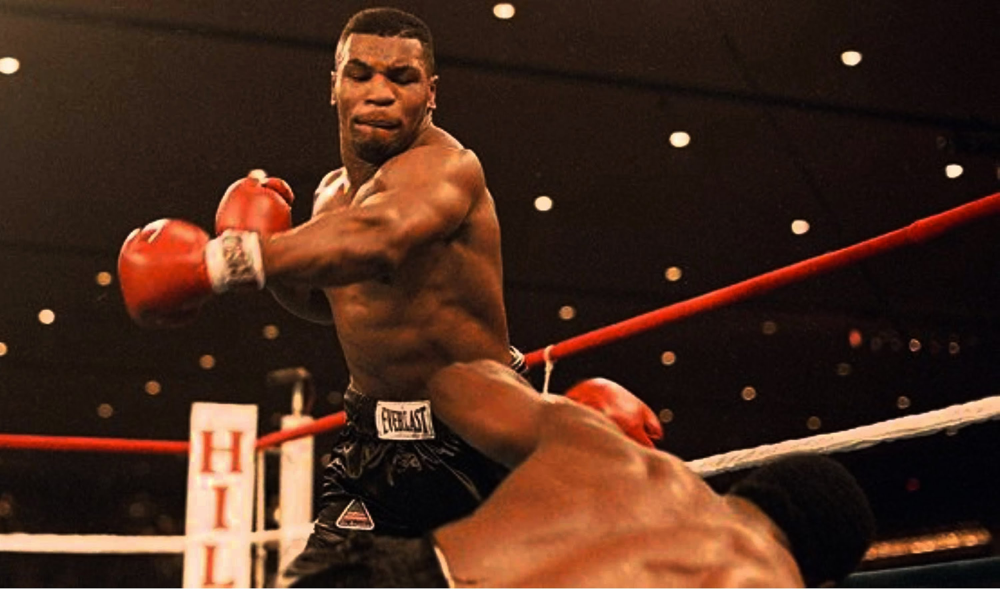
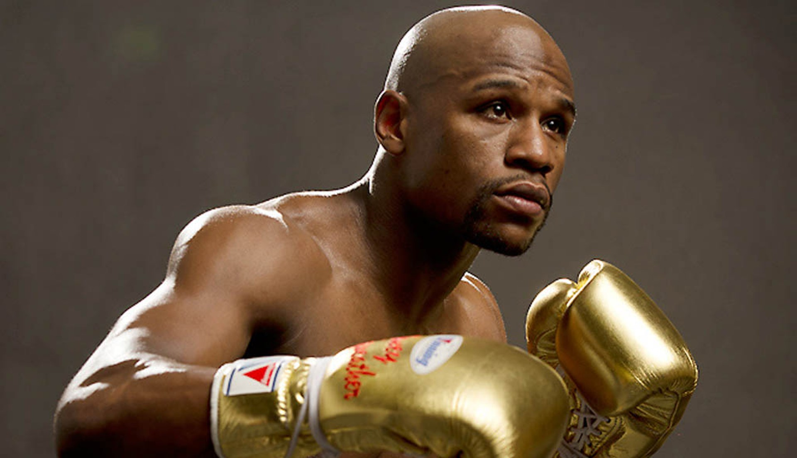
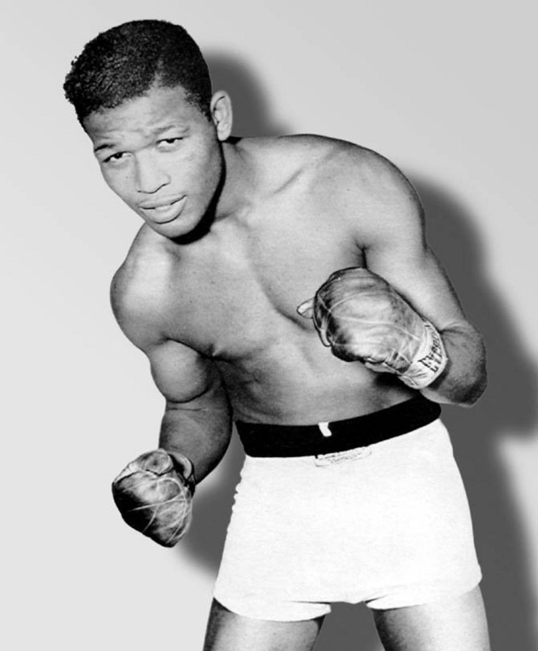

Famous Boxers
Muhammad Ali
Ali is widely regarded as one of the greatest boxers of all time. He won the heavyweight championship three times and had a record of 56 wins, 5 losses, and 37 knockouts. Ali was also known for his social activism and outspoken personality
Mike Tyson
Tyson is a former undisputed heavyweight champion of the world and one of the most feared boxers in history. He had a record of 50 wins, 6 losses, and 2 no contests, with 44 of his wins coming by knockout. Tyson's career was also marked by controversy, including his conviction for rape in 1992.
Floyd Mayweather Jr.
Mayweather is an undefeated former professional boxer who won 15 world titles in five weight classes. He had a record of 50 wins, 0 losses, and 27 knockouts. Mayweather was also known for his flamboyant personality and extravagant lifestyle.
Sugar Ray Robinson
Robinson is considered by many to be the greatest pound-for-pound boxer of all time. He held the world welterweight title five times and the middleweight title once, and had a career record of 173 wins, 19 losses, 6 draws, and 2 no contests, with 108 of his wins coming by knockout. Robinson was known for his incredible speed and fluidity in the ring.
